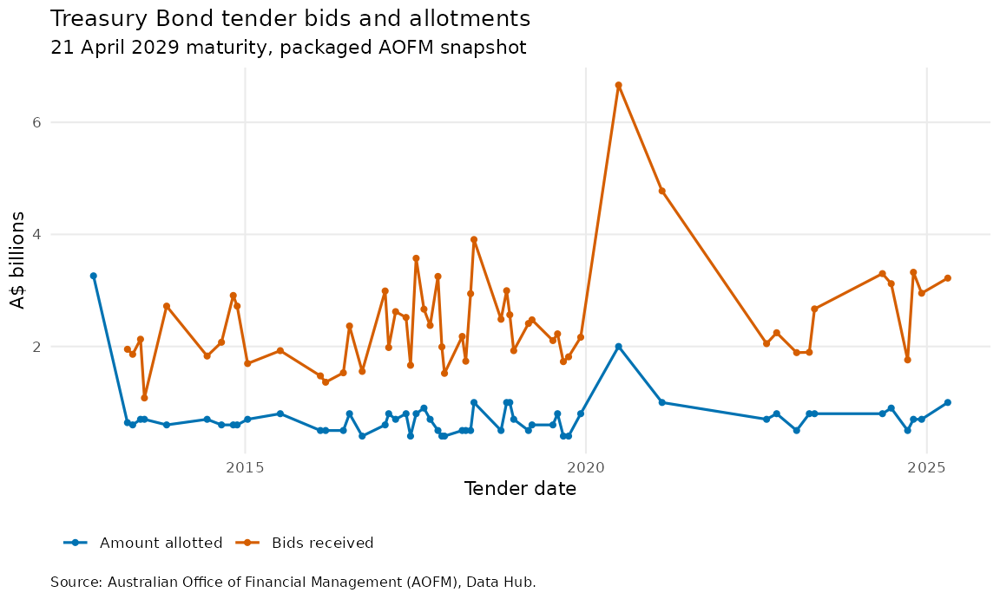

readAOFM connects local catalogue discovery with
retrieval and parsing of workbooks published by the Australian Office of
Financial Management (AOFM) Data Hub. This article follows a complete
workflow: identify Treasury Bond issuance, retrieve its long-form
observations, select a representative series, and create a chart. A
packaged official snapshot makes the rendered article deterministic
while the user-facing call remains the normal public API.
Discover a table locally
search_aofm() searches the package’s local catalogue and
returns metadata and ready-to-run calls. The default
read = FALSE keeps discovery network-free.
readAOFM::search_aofm("tb issuance")[, c("id", "reader", "read_call")]
#> id reader read_call
#> 1 tb_issuance read_transactional read_aofm("tb", "issuance")The search accepts ordinary descriptions as well as exact terminology. For example, these searches identify the indexed-bond and non-resident ownership families:
readAOFM::search_aofm("inflation")
#> security type id reader
#> 1 tib buyback tib_buyback read_transactional
#> 2 tib dealt tib_position_dealt read_eom
#> 3 tib issuance tib_issuance read_transactional
#> 4 tib settlement tib_position_settlement read_eom
#> 5 tib syndication tib_syndication read_syndication
#> 6 tib turnover tib_turnover read_secondary
#> read_call
#> 1 read_aofm("tib", "buyback")
#> 2 read_aofm("tib", "dealt")
#> 3 read_aofm("tib", "issuance")
#> 4 read_aofm("tib", "settlement")
#> 5 read_aofm("tib", "syndication")
#> 6 read_aofm("tib", "turnover")
readAOFM::search_aofm("foreign ownership")
#> security type id reader
#> 1 ownership nonresident ownership_nonresident read_ownership
#> read_call
#> 1 read_aofm("ownership", "nonresident")The read_call column is useful when a query returns more
than one table. For example, search_aofm("issuance") finds
Treasury Bond, Treasury Indexed Bond, and Treasury Note issuance;
retrieving that full result would request three workbooks.
Retrieve and chart a time series
The public entry point is
read_aofm(security, type, csv = FALSE). The
security and type values are exact selectors.
For the current AOFM source, run:
tb_issuance <- readAOFM::read_aofm("tb", "issuance")The rendered article executes that same public dispatcher and parser
with the installed tb_issuance.xlsx snapshot substituted at
the HTTPS transport boundary. The snapshot comes from AOFM media/591 and has
SHA-256
4f74568d37258a6fad7b80136cdd64a29341f7bfa8550d2a4d7f8cc785e2e5c9.
The packaged snapshot documentation records its provenance, attribution,
and licensing context. Live calls retrieve the current workbook
instead.
The public return contract is visible directly from the parsed object:
stopifnot(
is.data.frame(tb_issuance),
all(c("date_held", "tender_number", "maturity", "name", "value") %in%
names(tb_issuance)),
inherits(tb_issuance$date_held, "Date"),
inherits(tb_issuance$maturity, "Date"),
is.numeric(tb_issuance$value)
)
data.frame(
object_class = paste(class(tb_issuance), collapse = ", "),
rows = nrow(tb_issuance),
columns = ncol(tb_issuance),
date_class = paste(class(tb_issuance$date_held), collapse = ", "),
stringsAsFactors = FALSE
)
#> object_class rows columns date_class
#> 1 tbl_df, tbl, data.frame 26268 7 DateThe transactional reader preserves workbook identifiers, represents
measures in the long-form name/value columns,
and returns handled dates as Date objects. The following
base-R transformation selects two source measures for the 21 April 2029
maturity and converts their dollar values to A$ billions.
measure_labels <- c(
amount_allotted = "Amount allotted",
amount_of_bids = "Bids received"
)
tender_series <- tb_issuance[
tb_issuance$maturity == as.Date("2029-04-21") &
tb_issuance$name %in% names(measure_labels) &
!is.na(tb_issuance$value),
c("date_held", "maturity", "name", "value")
]
tender_series$measure <- factor(
tender_series$name,
levels = names(measure_labels),
labels = unname(measure_labels)
)
tender_series$value_billions <- tender_series$value / 1e9
tender_series <- tender_series[
order(tender_series$measure, tender_series$date_held),
,
drop = FALSE
]
series_preview <- utils::head(tender_series, 4)
data.frame(
date_held = series_preview$date_held,
measure = as.character(series_preview$measure),
value_billions = sprintf("%.2f", series_preview$value_billions),
stringsAsFactors = FALSE
)
#> date_held measure value_billions
#> 1 2012-10-10 Amount allotted 3.26
#> 2 2013-04-10 Amount allotted 0.64
#> 3 2013-05-08 Amount allotted 0.60
#> 4 2013-06-19 Amount allotted 0.70
if (requireNamespace("ggplot2", quietly = TRUE)) {
tender_plot <- ggplot2::ggplot(
tender_series,
ggplot2::aes(
x = date_held,
y = value_billions,
colour = measure,
group = measure
)
) +
ggplot2::geom_line(linewidth = 0.75) +
ggplot2::geom_point(size = 1.25) +
ggplot2::scale_colour_manual(values = c("#0072B2", "#D55E00")) +
ggplot2::labs(
title = "Treasury Bond tender bids and allotments",
subtitle = "21 April 2029 maturity, packaged AOFM snapshot",
x = "Tender date",
y = "A$ billions",
colour = NULL,
caption = paste(
"Source: Australian Office of Financial Management (AOFM),",
"Data Hub."
)
) +
ggplot2::theme_minimal(base_size = 11) +
ggplot2::theme(
legend.position = "bottom",
legend.justification = "left",
panel.grid.minor = ggplot2::element_blank(),
plot.caption = ggplot2::element_text(hjust = 0, size = 8)
)
tender_plot
}
For a single table, read_aofm() returns the parsed data
frame directly. When selectors match several supported tables, it
returns a named list keyed by table ID. Omitting both selectors requests
all 23 parser-supported tables and can involve many downloads.
csv = TRUE preserves the parsed return value and also
writes the reader’s CSV output under output/ in the current
working directory; the network and outputs article provides an isolated
example.
Retrieve the latest AOFM workbook
Set READAOFM_RUN_LIVE_EXAMPLES=true in an interactive or
development session to run the live call below after checking that the
AOFM site is reachable. The ordinary article build uses the
deterministic snapshot path above.
if (interactive() && identical(Sys.getenv("READAOFM_RUN_LIVE_EXAMPLES"), "true")) {
live_tb_issuance <- readAOFM::read_aofm("tb", "issuance")
stopifnot(is.data.frame(live_tb_issuance))
utils::head(live_tb_issuance, 3)
} else {
cat("Live read skipped; set READAOFM_RUN_LIVE_EXAMPLES=true to opt in.\n")
}
#> Live read skipped; set READAOFM_RUN_LIVE_EXAMPLES=true to opt in.Live readers fetch public workbooks over HTTPS without AOFM credentials. They stage each workbook in a temporary file and retrieve the current source on every call. AOFM controls upstream availability and workbook layout; use the network, outputs, and troubleshooting article for bounded transport details and recovery steps.